Vimics at the VetTalks Neurosurgery Workshop, Antalya, October 2026
The VetTalks Neurosurgery Workshop took place on 19–21 October 2026 at Ramada Plaza Antalya, Türkiye. Over three days, Dr. Svetoslav Hristov and Dr. Julien Guevar led theory sessions, cadaver labs and clinical case discussions on the thoracolumbar, lumbosacral and cervical spine. Vimics supplied the patient-specific pedicle screw drill guides used in the lumbosacral cadaver lab, and showed the guides on 3D-printed spine models and the VCage interbody fusion cage set at its stand.
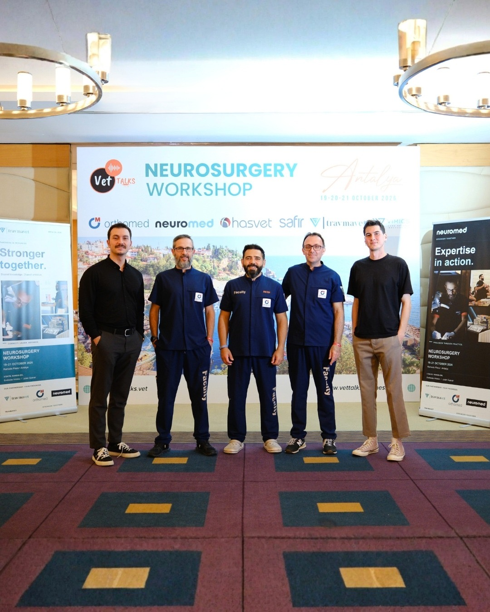
What the three days covered
The workshop was built around one region of the spine per day. Each day paired theory with cadaver labs and discussion of clinical cases, with a focus on implant positioning and spinal stabilisation.
- Day 1
Thoracolumbar spine
Approaches, implant positioning and stabilisation of the thoracolumbar segment.
- Day 2
Lumbosacral spine
Lumbosacral stabilisation, with Vimics patient-specific pedicle screw drill guides used in the cadaver lab.
- Day 3
Cervical spine
Cervical approaches and stabilisation techniques.
Places were fully booked ahead of the event. The workshop was supported by Orthomed (UK), Neuromed, Hasvet, Safir and Travmavet.
What we showed at the Vimics stand
Our stand had two parts: patient-specific pedicle screw guides for spinal stabilisation in dogs and cats, and VCage, our interbody fusion cage set. Everything on the table could be picked up and handled. We also gave interviews at the event, presenting VCage and the pedicle screw guide.
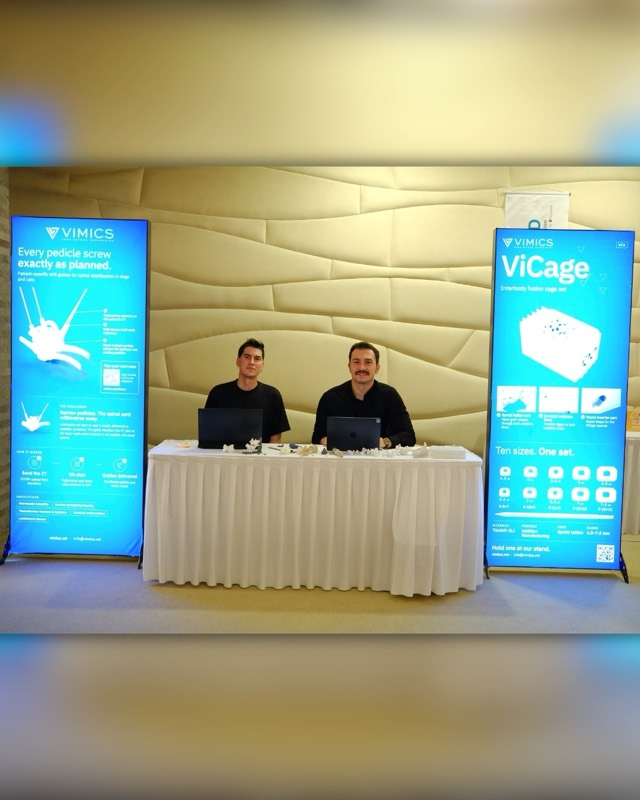
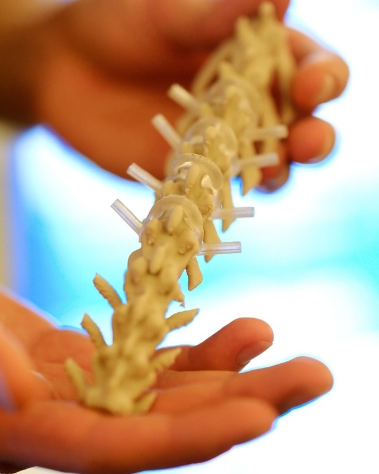
Pedicle screw guides on printed spine models
Each guide is designed from the patient's CT. We plan the screw trajectories on the 3D model of the vertebrae, then design a guide whose bone-contact surface follows the dorsal anatomy, so that it seats in one position. Drill sleeves on the guide hold each planned trajectory while the surgeon drills. At the stand, guides were shown seated on printed spine models, so visitors could check how the guide sits on the bone and where each sleeve points.
VCage interbody fusion cage set
VCage is our interbody fusion cage set. Each cage has a gyroid lattice core, serrated endplate faces and a threaded inserter port on the dorsal face, and is produced from Ti6Al4V ELI by Additive Manufacturing. The set was on the table in its tray, and single cages went from hand to hand.
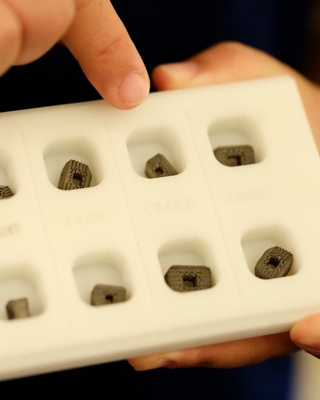
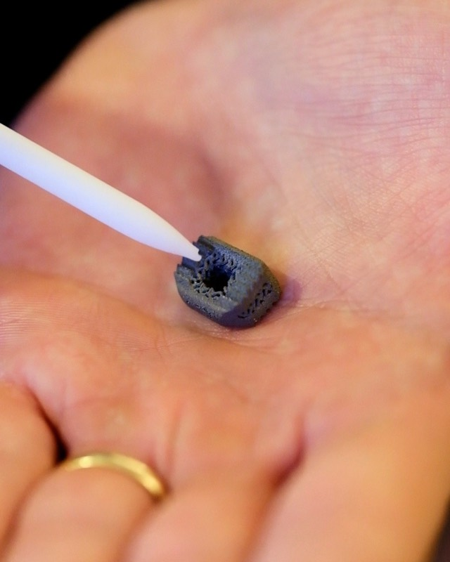
Why patient-specific guides belong in a spine course
Pedicles in small dogs and cats are narrow, and the spinal cord lies millimetres from the screw path. Landmarks are hard to read when the vertebrae are small, malformed or unstable. A guide made from the patient's CT carries the plan made on the 3D model to the bone, screw by screw. This is why our guides were part of the lumbosacral cadaver lab, and why many of the conversations at our stand were about planning: which trajectories to choose, how the guide seats, and what CT data we need.
How a case reaches Vimics
- CT data. You send the patient's CT as a DICOM series.
- 3D planning. We segment the anatomy and plan the trajectories or implant fit on the 3D model.
- Design and production. The guide or implant is designed on the plan and produced by Additive Manufacturing.
- Surgery. You receive the guide or implant for the planned procedure.
Photos from Antalya
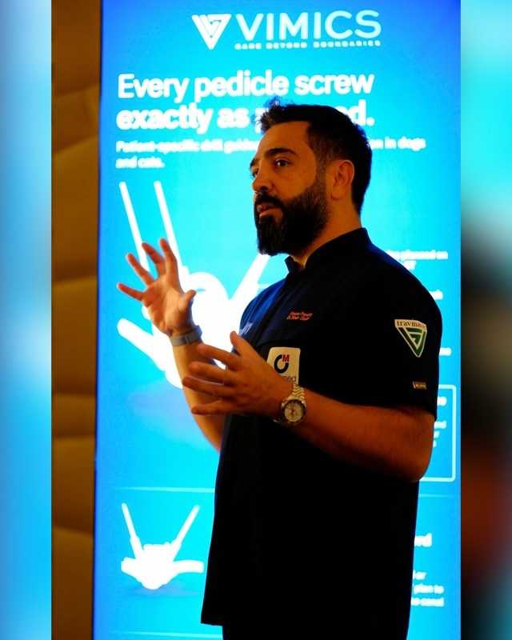
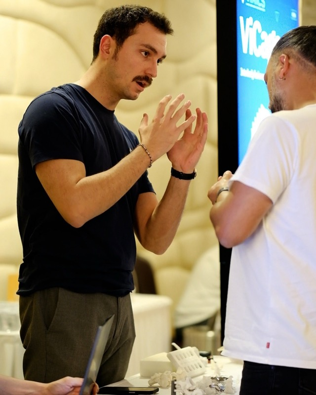
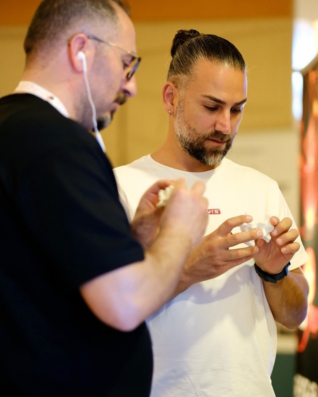
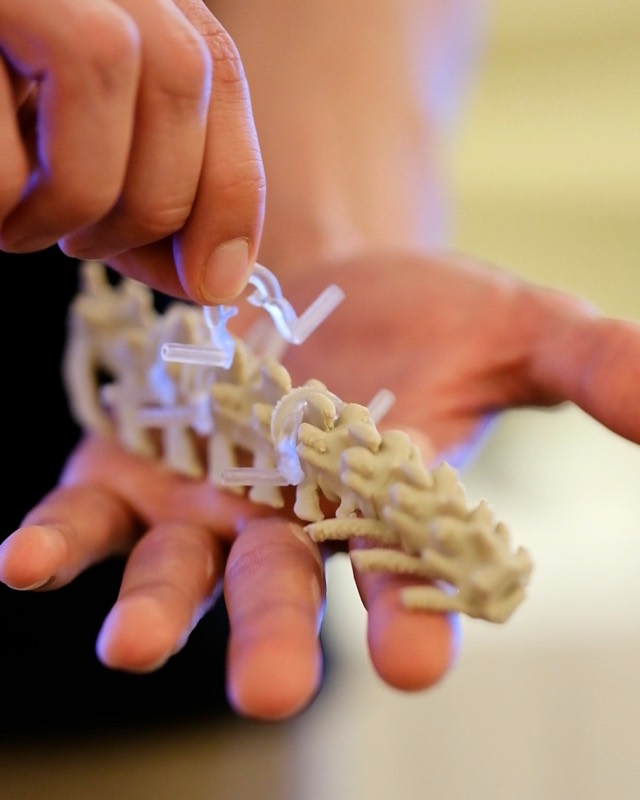
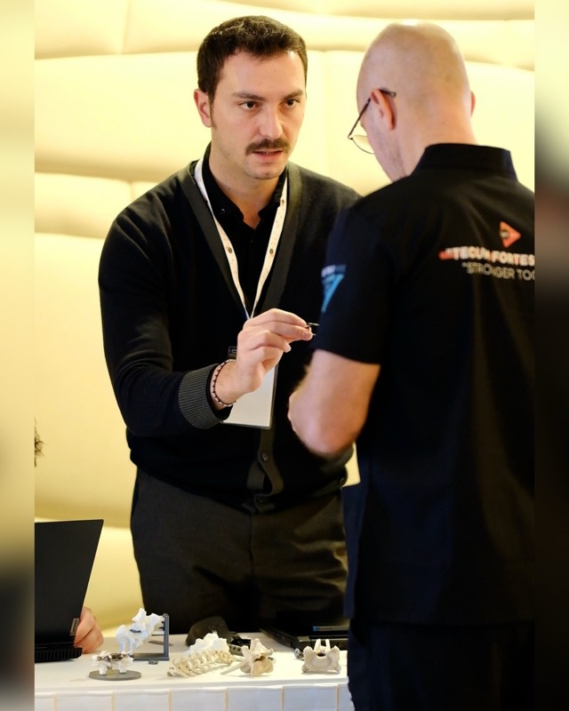
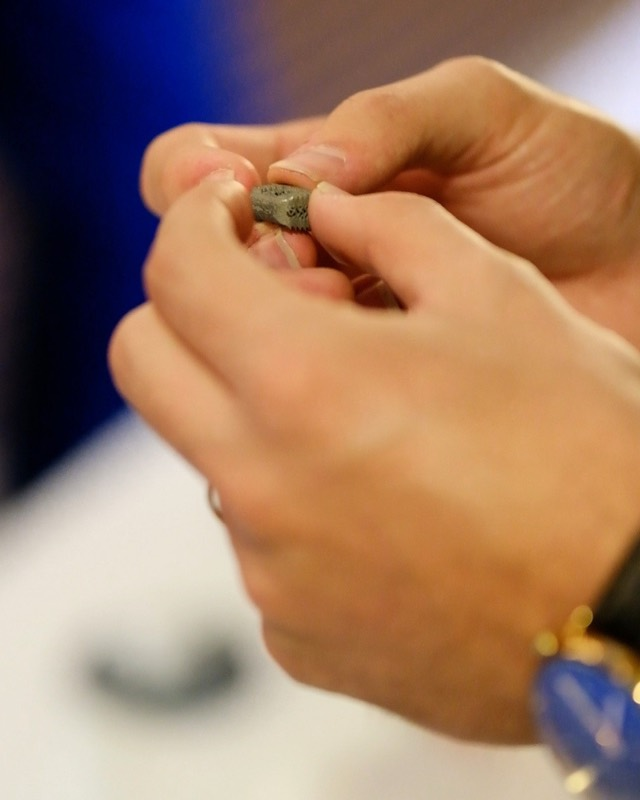
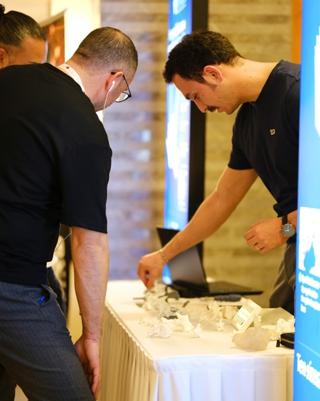
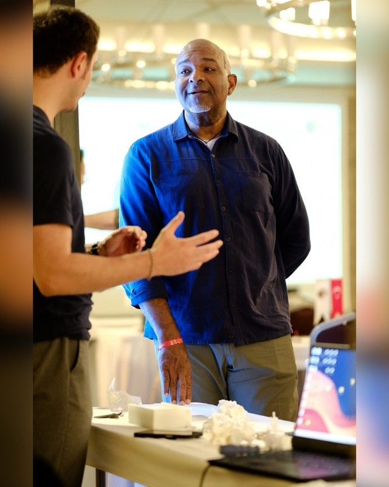
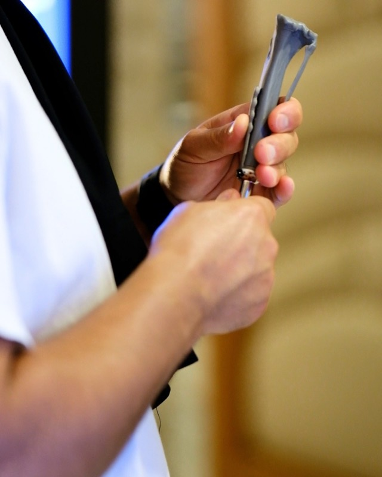
Frequently asked questions
When and where was the VetTalks Neurosurgery Workshop 2026?
On 19–21 October 2026 at Ramada Plaza Antalya, Türkiye.
Who taught the workshop?
Dr. Svetoslav Hristov (DVM, AVSB, CertSAS) and Dr. Julien Guevar (DVM, MVM, DECVN, MRCVS).
Were patient-specific guides used at the workshop?
Yes. Vimics patient-specific pedicle screw drill guides were used in the cadaver lab on the lumbosacral day.
What is a patient-specific pedicle screw guide?
A drill guide designed from the patient's own CT. Screw trajectories are planned on the 3D model, the guide's bone-contact surface follows the dorsal vertebral anatomy so it seats in one position, and drill sleeves hold each planned trajectory during drilling.
What is VCage?
An interbody fusion cage set from Vimics. Each cage has a gyroid lattice core, serrated endplate faces and a threaded inserter port, and is produced from Ti6Al4V ELI by Additive Manufacturing. See VCage.
How can a surgeon send a case to Vimics?
Export the patient's CT as DICOM, upload it at vimics.vet/dicom and e-mail the case details to info@vimics.vet.
Thank you
Thank you to VetTalks for the organisation, to Dr. Svetoslav Hristov and Dr. Julien Guevar for three days of teaching, to every participant who stopped at our stand, and to the partners of the workshop.
Vimics is a veterinary orthopaedic technology company developing patient-specific orthopaedic implants, surgical guides and digital surgical planning solutions for animals.